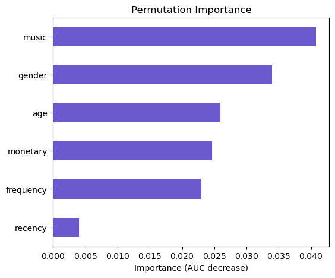
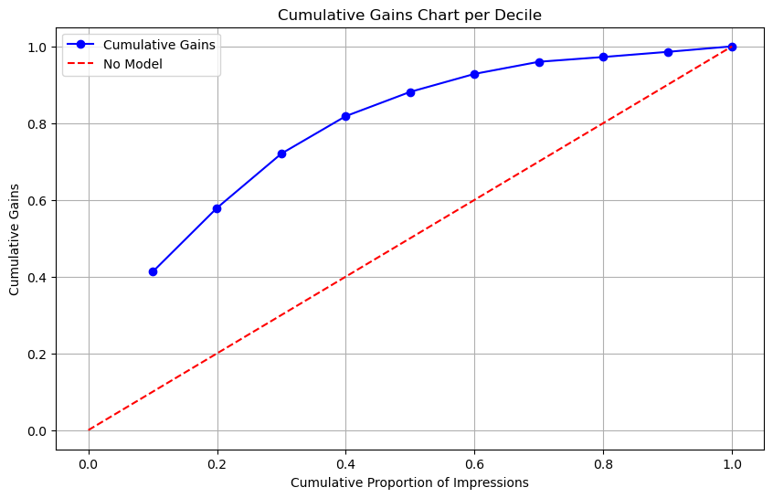
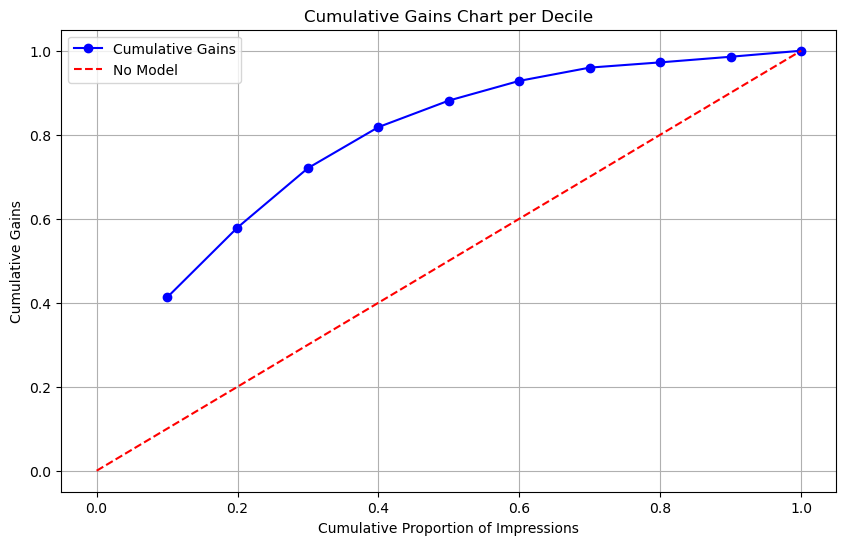
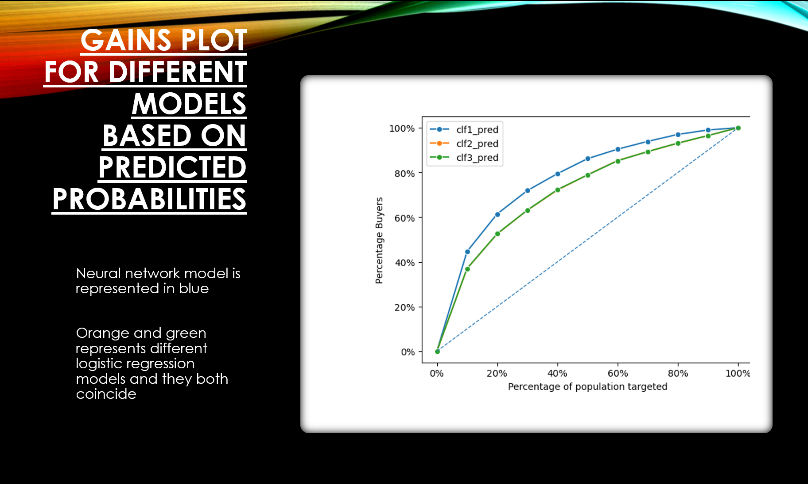
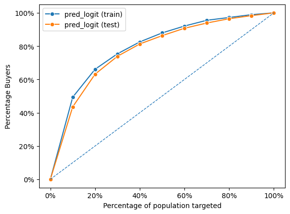
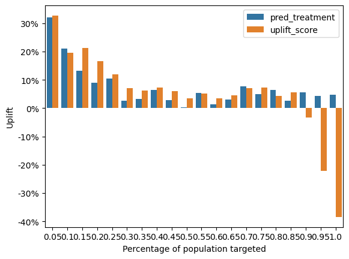
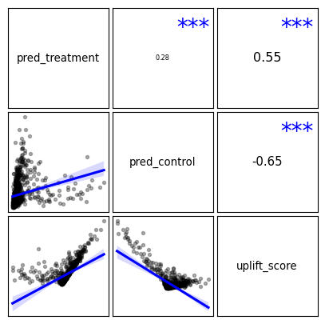
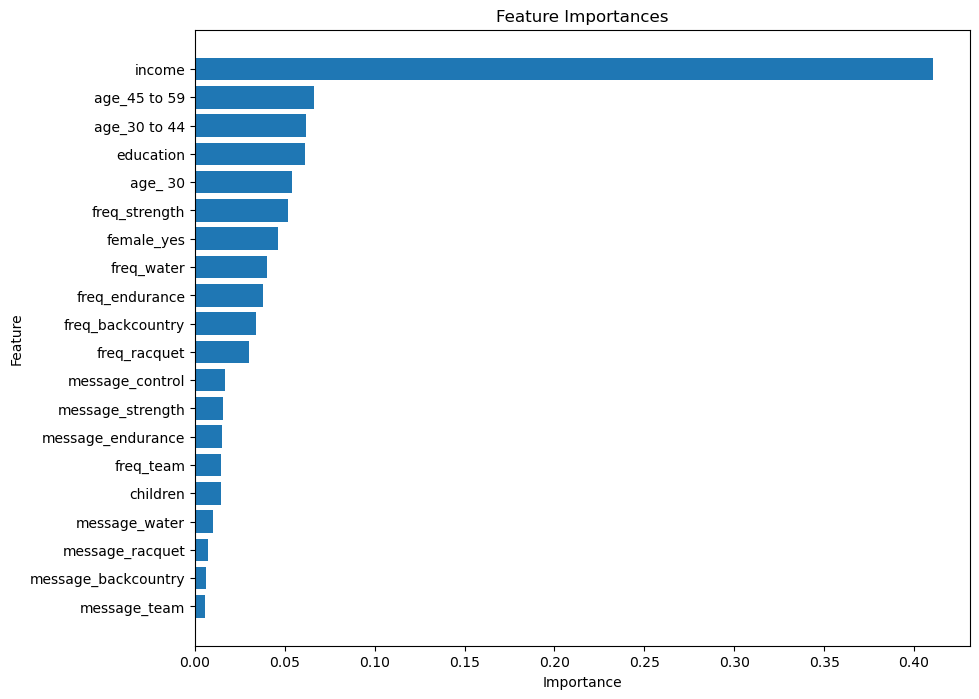

Customer Analytics Case Studies
-
Optimizing Marketing Strategies: A Data-Driven Approach to Enhancing Customer Engagement in the EchoStream Case
To address the case, I began by conducting preliminary analysis on the dataset provided for the EchoStream case. I calculated the percentage of customers who responded to the deal offer message by determining the proportion of buyers among all customers. Additionally, I computed the average number of sessions purchased by customers who bought one or more 30-minute sessions, using the ordersize variable for the calculation. These initial steps helped in understanding the response rate and purchase behavior of customers. Next, I built targeting models to predict customer response and order size using logistic regression and linear regression, respectively. For the logistic regression model, I used buyer as the dependent variable and recency, frequency, monetary, age, gender, and music as the explanatory variables. I created prediction plots for all explanatory variables and assessed variable importance using Permutation Importance. Similarly, for the linear regression model, I used ordersize as the response variable and the same set of explanatory variables, focusing only on customers who placed an order after receiving the deal offer message. In the profitability analysis, I calculated the breakeven response rate and projected profit based on offering the deal to all remaining potential customers. I evaluated the performance implications of targeting customers with a predicted probability of purchase greater than the breakeven response rate and compared the projected profit and return on marketing expenditures for different targeting approaches. Finally, I recreated the plots using the dataset with actual results from the deal offer roll-out and analyzed the actual performance of the targeting approaches. Throughout the analysis, I ensured to adhere to the guidelines provided and made data-driven decisions based on the insights obtained from the models and calculations.
A Digital Adventure: Enhancing Targeting Strategies
At PixelPioneers, our journey in expanding our player community has been notably accelerated by our partnership with the Vneta ad-network. Utilizing compelling video advertisements that showcase the essence of our games, we've successfully captivated a significant influx of new enthusiasts. Yet, there's room to refine our ad targeting to achieve greater efficiency. We're evaluating potential improvements, such as investing in additional data from Vneta or leveraging their expert analytics consultancy. The core challenge revolves around determining the value of these enhancements compared to our existing methods, with a keen eye on cost implications. To tackle this, I've ventured into logistic regression analysis with our collected data. My goal with this modeling is to predict ad click-through probabilities, providing pivotal insights for fine-tuning our ad targeting. Through meticulous model validation—examining statistical significance, permutation importance, and visualizing prediction outcomes—I aim to pinpoint key influencing factors and assess model efficacy using measures like Pseudo R-squared and the Chi-square test. I'll also consider the impact of multicollinearity and the risk of omitted variable bias to ensure our models' integrity. Having developed logistic regression models and derived predictive insights, I will next assess various targeting strategies. By envisioning future advertising initiatives and calculating prospective costs and benefits, I'll scrutinize options ranging from broad-reaching campaigns to nuanced targeting based on model predictions or Vneta's proprietary insights. My ultimate objective is to guide PixelPioneers towards the most effective and economically viable targeting approach, balancing immediate impact with enduring brand growth.
 

Optimizing Outreach: The Software Upgrade Campaign
Our mission is to pinpoint businesses within a pool of 22,500 in our test set that show the highest propensity to engage with a second-round mailing, promoting an upgrade to the newest QuickBooks software iteration. The dataset at our disposal offers a spectrum of customer attributes, encompassing ZIP codes, purchasing history, elapsed time since the last transaction, among others. Our strategy involves harnessing logistic regression and neural networks to sift through potential respondents effectively. The initial phase will focus on data examination and preparation, addressing any gaps and transforming categorical data appropriately. Following this, we'll embark on crafting and fine-tuning logistic regression and neural network frameworks, with their performance vetted through accuracy, precision, recall, and the F1-score. To bolster our models' reliability, we'll apply cross-validation techniques. Upon determining the superior model based on its predictive prowess, we'll employ it to forecast the likelihood of responses from the businesses in our test dataset. This step will be pivotal in projecting the financial yield of the second mailing campaign, taking into account the profit per respondent minus the costs entailed by the mailing effort. Acknowledging an expected 50% decline in engagement from the first to the second outreach, our strategy will be to refine our targeting to enhance profitability and efficiency. The culmination of this endeavor will be a detailed report encapsulating our methodologies, evaluations, and the rationale behind our targeting choices.
Strategies in the Stars: Boosting Mobile Game Campaigns
Stepping into the mobile gaming arena, Starward Studios' Stellar Voyagers made a striking entry on Apple iOS platforms, masterfully capturing the essence of console gaming for mobile users. The game introduced players to an enthralling cooperative multiplayer action-adventure, inviting them to journey through the galaxy in customizable spacecraft, navigating a meticulously crafted universe teeming with both player and AI-controlled vessels. To maintain player interest and fuel revenue growth, Starward Studios introduced in-app purchases featuring intricately designed campaign adventures. However, the debut campaign, "Galaxy Quest," did not achieve the expected uptake among the active gaming community, despite being priced at $14.99 and promoted through organic channels, which led to some unease among the leadership. Confronted with the tepid response to "Galaxy Quest," CMO Alex Chen rallied the team to explore alternative marketing strategies. The initial analysis suggested that the campaign's pricing might not align well with mobile gaming expectations, coupled with a potential lack of awareness impeding sales. In lieu of an immediate price reduction, the decision was made to capitalize on the studio's robust in-app advertising tools and detailed analytics to amplify the campaign's visibility and underscore its unique offerings, with the aim of enhancing sales while upholding the pricing structure.
Enhancing Campaign Efficiency: The Uplift Modeling Approach
The endeavor focuses on implementing uplift modeling for refined customer targeting in a promotional campaign, aiming to boost incremental gains. The dataset encompasses a control segment (customers who were not presented with an advertisement) and a treatment group (customers who were shown a randomly selected advertisement). The objective is to evaluate uplift modeling's efficacy over traditional propensity scoring in pinpointing target customers. To embark on this, I initially refined the dataset by integrating the "advertisement" attribute to both cohorts, assembling a consolidated dataset for the analysis. Following this, I employed logistic regression to construct an uplift model and deduced the uplift score. This step involved contrasting the uplift model's output with that of a propensity model, scrutinizing metrics such as uplift rate and incremental uplift. Advancing further, I experimented with Random Forest and XGBoost frameworks, adjusting hyperparameters to enhance model performance. The concluding phase entailed identifying the ideal customer segment for targeting via both propensity and uplift methodologies and estimating the incremental profits derivable from this targeted approach. This exploration yielded valuable perspectives on the comparative advantages of various modeling techniques in elevating profit margins through strategic customer engagement.
 Revolutionizing Email Marketing: Tailored Strategies for Enhanced Engagement and Profit
The narrative unfolds with Alex Rivera pioneering a novel email marketing strategy, aimed at augmenting customer engagement and profit margins. In pursuit of empirical evidence to support this innovative strategy, Rivera orchestrates a meticulously randomized experiment. This study's objective is to discern the optimal email frequency that maximizes customer engagement and financial performance over a six-month period. By categorizing customers into different email frequency cohorts, Rivera seeks to mitigate potential unsubscribe rates while ensuring sustained profitability. The experimental results reveal that a bi-weekly email schedule strikes the most advantageous balance, enhancing revenue while keeping unsubscribe rates in check. Following the experiment, Rivera champions a refined email policy that prioritizes personalized content delivery. This strategy employs advanced customer analytics to allocate emails more effectively, aiming to maximize profit predictions for individual customer segments. This approach encourages interdepartmental cooperation and operational efficiency. Despite its promising outlook, the revised policy introduces challenges such as increased operational demands and the necessity for continuous optimization. A suggestion for future improvement includes simplifying the execution process to enhance its feasibility and scalability. In the analytical phase, the team, following Rivera's guidance, utilizes a combination of logistic regression, neural networks, random forests, and XGBoost for predicting customer responses and profitability linked to diverse email marketing campaigns. Each model undergoes fine-tuning to optimize its predictive accuracy. Additionally, the team leverages Generative AI technologies, including ChatGPT, to enrich their analysis and problem-solving process. The primary focus remains on crafting individualized predictions for each customer, while also critically assessing the viability and potential refinements of the proposed email strategy.
